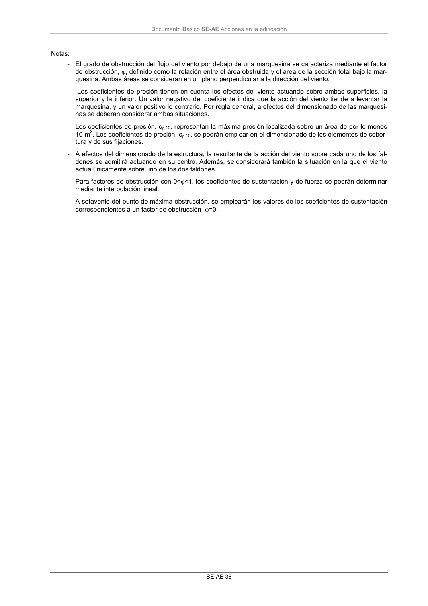

DB-SE-AE Acciones en la edificación · edición 2009-04 · capa oficial
Documento DB-SE-AE-oficial · SHA-256 del PDF 26116e5088955f0c6963a6187270cad282e1e7bf5a53a90f695c8fa50b4e4487
Página física 42 de 46.
Copia fiel del PDF fuente · Fuente oficial
Ficha de la disposición en la fuente oficial
Formato: Texto de la página (Markdown)
Documento Básico SE-AE Acciones en la edificación SE-AE 38 Notas: - El grado de obstrucción del flujo del viento por debajo de una marquesina se caracteriza mediante el factor de obstrucción, ϕ, definido como la relación entre el área obstruida y el área de la sección total bajo la mar- quesina. Ambas áreas se consideran en un plano perpendicular a la dirección del viento. - Los coeficientes de presión tienen en cuenta los efectos del viento actuando sobre ambas superficies, la superior y la inferior. Un valor negativo del coeficiente indica que la acción del viento tiende a levantar la marquesina, y un valor positivo lo contrario. Por regla general, a efectos del dimensionado de las marquesi- nas se deberán considerar ambas situaciones. - Los coeficientes de presión, cρ,10, representan la máxima presión localizada sobre un área de por lo menos 10 m2. Los coeficientes de presión, cρ,10, se podrán emplear en el dimensionado de los elementos de cober- tura y de sus fijaciones. - A efectos del dimensionado de la estructura, la resultante de la acción del viento sobre cada uno de los fal- dones se admitirá actuando en su centro. Además, se considerará también la situación en la que el viento actúa únicamente sobre uno de los dos faldones. - Para factores de obstrucción con 0<ϕ<1, los coeficientes de sustentación y de fuerza se podrán determinar mediante interpolación lineal. - A sotavento del punto de máxima obstrucción, se emplearán los valores de los coeficientes de sustentación correspondientes a un factor de obstrucción ϕ=0.
